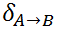
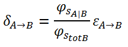
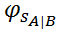
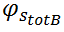
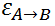
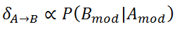
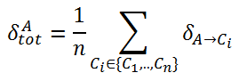

Dependency.
Apr 10, 2017
•
Also in:
 https://medium.com/@riccardo_cardin/dependency-ffc118404f0
https://medium.com/@riccardo_cardin/dependency-ffc118404f0
programming
oop
software-engineering
What does the concept of dependency mean in programming? Is it important in modern development process? Has the concept of dependency a different meaning when we speak about procedural programming, object oriented programming or functional programming? In this post I will try to sum up all the knowledge I gained during my life as a software developer.
The very beginning
First of all we need to have clear in mind the concept of dependency in every day language. Merriam-Webster gives the following definition of dependency:
The quality or state of being influenced or determined by or subject to another.
Clarifying. Sometimes we simply need to return to our roots for deeply understand a concept. So, a component that is dependent on another is influenced by this one. What does this mean? If a component changes internally, its implementation, or externally, its interface, it is probable that all dependent components should change accordingly.
We have just derived that dependency between two components is a measure of the probability that changes to one component could affect also the other. The stronger the dependency between the components, the higher the above probability.
Coupling
Coupling between components measures exactly their degree of dependency. Tightly-coupled components
have a higher probability to change together; loosely-coupled components have a lower probability.
In software engineering we have a mantra, that was taught us from the very beginning:
Dependency between components must be minimized, making components loosely coupled.
Why is this principle so important? The main concept that is behind it is that we should be free to change a component to resolve a bug, or to add a new feature, or to do whatever we want, without having to worry about changes to other components of the architecture.
Why are changes considered so dangerous in software development? Every time we change a component, there is the risk that we are introducing a bug. To avoid regressions, we have to re-execute all tests associated to the changed components (what if we don’t have automated test? Ask Robert C. Martin…)
Moreover, we might not own directly the dependent components. In such cases, changes must be discussed with external developers, properly scheduled, and so on. This is one of the main reasons that stop the evolution of an architecture.
Finally, this principle is so important because of dynamism of software architectures. There is no software product that does not change over its lifetime. Changes happen, changes are part of software world.
Object oriented programming and dependency
In object oriented programming the above concept of component is usually identified by a type. Basically, in object oriented programming we are interested in dependencies among types, that are concrete types, a.k.a. classes, or abstract types, a.k.a. abstract classes and interfaces.
The different kinds of dependency between types are well summarized in the following figure.

The figure maps all possible types dependencies into four equivalence sets. The notation used is UML. Let’s have a brief look at everyone.
Dependency
On the left we find the weakest form of dependency. With a dashed arrow between two types in UML we
model a dependency that
declares that a class needs to know about another class to use objects of that class.
The following code fits exactly the above definition.
class A {
def methodOfA = ...
}
class B {
def methodWithAParameter(a: A) = ...
def methodWithAReturn: A = ...
}As you can see, the only part of A that B needs to know is the interface inferred by A methods. So,
if only if A changes its interface, i.e. the signature of method methodA, a change in B might
be required.
Association
Increasing the level of dependency we find association.
Association means that a class will actually contain a reference to an object, or objects, of the other class in form of an attribute.
Translating into code, we have something similar to the following.
class A {
// ...
}
class B(val a: A) {
// ...
}Differently from the previous, an association means that a class is made of references to other classes. Their behaviours start to be more coupled, because the relationship between the types is not temporary anymore, but it starts to be something permanent (i.e. all the lifetime of an object).
In our example, references to A inside B are allowed in every method of the latter, widening
the scope of possible dependencies from A.
Aggregation and Composition
Aggregation and composition are stronger versions of the association
relationship: They add additional properties to the latter. Essentially,
an aggregation states that one type owns the other, which means that it is responsible of its creation and deletion.
The composition adds the feature that if B is a composition of A, then there can be only an instance of the first that owns
an instance of the second. Instances of A are not shared among different instances of B.
An example of composition is represented by the following code.
class B() {
val a: A = new A()
// ...
class A {
// ...
}
}These relationships generate a strong dependence between types, because one type has to know how to build an instance of the other.
Inheritance
Inheritance represents the strongest type of dependency relationship that can be defined between two different
types.
If you find yourself saying that the class is a type of another class, then you might want to consider using inheritance (or generalization).
class A(i: int) {
def methodOfA = ...
}
class B(i: int) extends A(i) {
def methodOfB1 = ...
def methodOfB2 = ...
}A is known as parent class, whereas B is known as child class.
A child class inherits and reuses all of the attributes and methods that the parent contains and that have public, protected, or default visibility.
Inheritance is also known as implementation reuse. The quantity of code that is shared among the two types is huge. It is possible that every change to A can result in a change to B. This is the real tight coupling! And did you notice
that, using inheritance, the information hiding principle is not respected anymore?
However, not all the types of inheritance are bad guys. Inheritance from abstract types mitigates the drawbacks of this kind of relationship. Why? The lower the shared code, the lower the degree of dependence. Type inheritance, which means that a class implements an interface, it is not harmful: Only interface methods’ signatures are shared.
Calculating the degree of dependency
You should have noticed a pattern from the above descriptions. The more the quantity of shared code between two types, the stronger the dependency. It is also true that, the wider the scope of this dependency in terms of time, the stronger the dependency.
It would be nice if there were a mathematical formula to calculate the degree of coupling between two classes. With the information that we gave, we can try to formalize it.
Given two classes A and B, the degree of dependency between them, ,
can be derived using the following formula.

 is the quantity of code (i.e., SLOC) that is shared between
types A and B.  is the total number of code (i.e. SLOC) of
B class. Finally,  is a factor between 0 and 1 and the wider
the scope between A and B, the greater the factor.
values range between 0 and 1: A value of 0 corresponds to no dependency, and a value of 1 corresponds to the maximum degree of dependency.
When between A and B holds the weakest type of dependency we saw so far,
is near to 0, whereas it is near to 1 when inheritance holds.
For example, if B inherits from A, then, the shared code
is represented by all the code of A that has not a private scope. Whereas, if a method of B simply refers
an instance of A among its parameters, the shared code will be represented only by the signatures of public methods of A.
It is important to note that the degree of dependency between A and B is directly
proportional to the probability that if B is changed, A should be changed accordingly.

Finally, the total degree of dependency of a type A can be
calculated as the mean of the dependency degrees with respect to every other single type in the architecture.

Conclusions
Summing up, we gave a definition of dependency in software engineering. We tried to understand why dependency among components should be minimized. We revised how UML helps us to visually manage the dependencies, in object oriented world. With this information, we tried to formalize a formula to calculate the degree of dependency between two class.